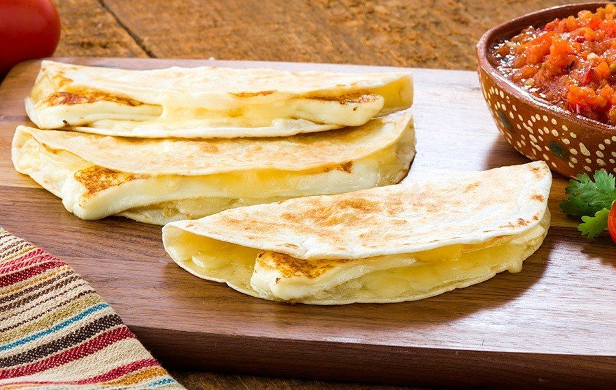

Return
Quesadillas

Description
Quesadillas are a classic Mexican dish that primarily consist of a corn or flour tortilla, cheese, and sometimes a protein.
Ingredients
- Tortillas (corn or flour)
- Cheese
- Optionally: Protein (chicken, beef, etc)
Steps
- Place tortillas in a flat manner in the frying pan on low-medium heat
- Check for browning after a few minutes, and then flip all quesadillas
- Place cheese on tortillas, as well as any chosen proteins and seasonings
- Immediately fold tortillas into a semicircle shape
- Brown both sides of tortilla, and then remove from pan
- Enjoy!